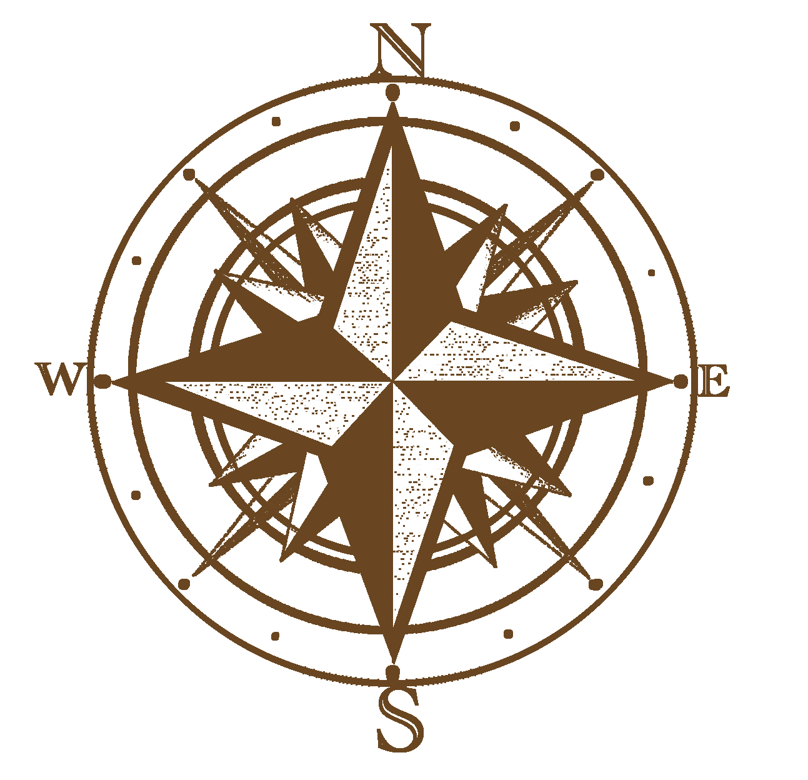

Kate Butchino
Health & Wellness Freelance Copywriter || Health Coach
Helping to navigate the path for health seekers & health focused businesses.
Your guide for all things health & wellness.

Ever felt lost? That's how most people are feeling today about their health and wellness. Where do I start? What does my path look like? Can I do this?
With over a decade in the health and wellness industry and a degree in Exercise Science, I have become a guide on the journey to optimal health, tailored to each client, each demographic and have helped hundreds of lost health seekers find their path. I know what health seekers are thinking, what obstacles they face on a daily basis, and the right tools to help them get on track.
I can also help your business reach out to this target audience to help your product, service, program, content, or any marketing needs get into the hands of those who need it most. I specialize in blogs, articles, emails, video scripts, e-newsletters, web content, and social media management to put your business up front and center. With gyms being closed, I have dedicated my time to develop the skills your business needs to grow in it's online presence.
Feel free to contact me for a FREE consultation to learn more about what I can do to help you navigate your path, whether you are a health seeker yourself or looking to reach out to the health seekers of the world. I am your guide.